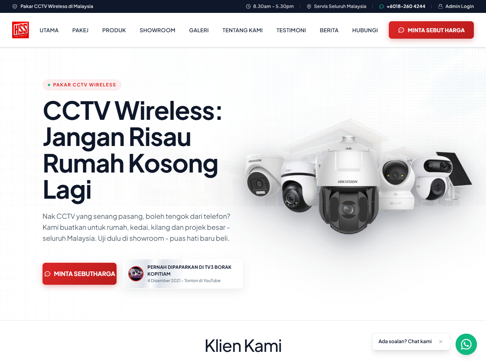

01
HSS Wireless CCTV
A public-facing website for a Malaysian wireless CCTV provider, built around clear services and a direct quote path.
View website
03 / Selected work
A focused look at the public sites and business systems we build for real-world use.
01
A public-facing website for a Malaysian wireless CCTV provider, built around clear services and a direct quote path.
View website